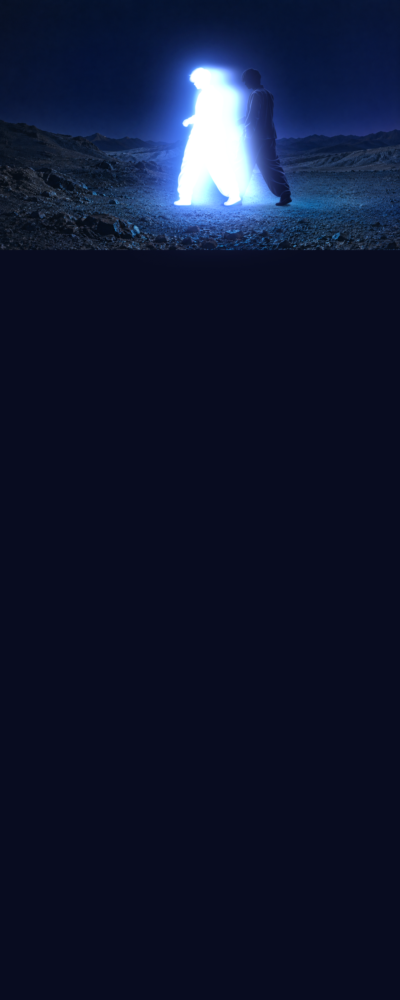

ФИЗИКА ДУШИ
THE MORE
YOU MOVE
Ты уже сделал шаг
Свет всё ещё помнит тебя
ЧТО ОСТАЁТСЯ, КОГДА ТЫ УХОДИШЬ?
THE MORE
YOU LEAVE
ТЕЛО ЗДЕСЬ ДУША ДАЛЬШЕЛистай ниже ↓
О невидимом
У ДУШИ НЕТ ФОРМЫ
НО ЕСТЬ ПРИСУТСТВИЕ
Мы узнаём друг друга по тому, что нельзя увидеть
По теплу, которое остаётся после встречи
По смелости быть собой, даже когда никто не смотрит
То, что внутри
ВНУТРИ
БОЛЬШЕ
Мы меняемся Чувствуем Отпускаем
И всё же остаёмся собой
Внутренний голос
Память
Быть рядом больше, чем касаться
Слышать себя значит доверять
Помнить значит сохранять тепло
Прикоснись к форме и поверни ↗Возвращение к себе
ТИШЕ МИР
ЯСНЕЕ ТВОЙ ГОЛОС
- 01
Замедлись
Оставь снаружи чужие ожидания
- 02
Почувствуй
Заметь, что отзывается именно тебе
- 03
Останься собой
Тебе не нужно становиться кем-то другим
Твоё присутствие уже меняет мир
Свет проявляется
Не ищи другой свет
Заметь свой
Твой свет в движении · поверни его